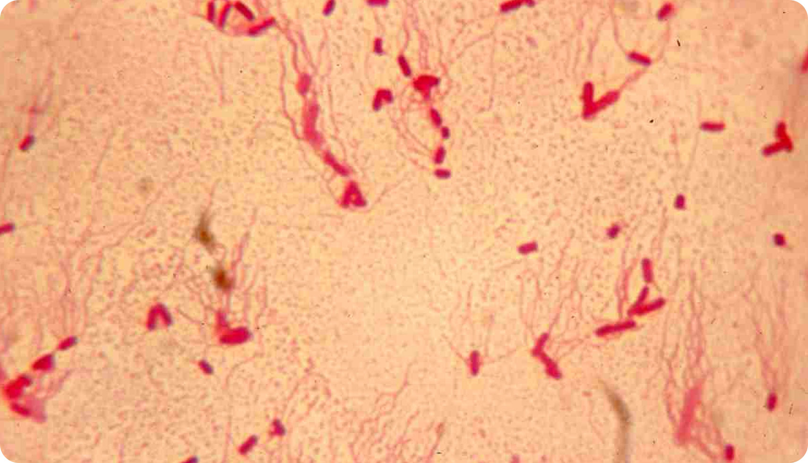
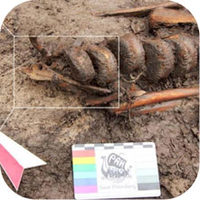

<!--#set var="title" value="ОТКРЫТЫЙ ФОРМАТ" -->
<!--#include virtual="/parts/header.html" -->
<!--#include virtual="/parts/breadcrumbs.html" -->
<div class="container tpad25 fpad90">

    <div class="row justify-content-between ">
        <div class="col-xl-8 col-lg-9 ">
            <article class="news">
                <div class="news__top">
                    <a href="" class="news__top__cat">ОТКРЫТЫЙ ФОРМАТ</a>
                    <div class="news__top__date">25 мая 2025</div>
                </div>
                <div class="news__content text">
                    <h1>Растения — изучать и учиться</h1>
                    <h4>Приглашаем школьников на лекцию «По следам удивительных арктических экспедиций XVIII-начала XIX
                        вв.», которую 20 декабря прочтет ведущий научный сотрудник кафедры геоморфологии и
                        палеогеографии географического факультета МГУ, к.г.н., Почетный полярник Ф.А. Романенко. </h4>
                    <div class="news__slider">
                        <div class="news__slider__img">
                            
                        </div>
                        <div class="news__slider__caption">
                            Наука и жизнь // Иллюстрации
                        </div>
                    </div>

                    <div class="news__interview">
                        <p><b><i> — Борис Николаевич, вроде бы фотосинтез – это понятие, которое всем знакомо со
                            школьных
                            лет. Но оказывается, это большая фундаментальная проблема, которую изучают целые институты.
                            Неужели тут остаются какие-то загадки?</i></b></p>

                        <p>— Дело в том, что тут есть много аспектов: скажем, для агрономов процесс фотосинтеза важен,
                            потому что им важен урожай. Этот процесс активно изучается, потому что кислород, которым мы
                            дышим, это продукт фотосинтеза. Когда я студентам читаю лекции, задаю вопрос: вот маленькое
                            зёрнышко, из которого потом вырастает дерево. За счёт чего вырастает? За счёт процесса
                            фотосинтеза. То есть фотосинтез – это процесс, который создает биомассу. Его могут изучать
                            биологи, химики, физики – тут большой простор для исследований и исследователей.</p>

                        <p><b><i>— Но ведь фотосинтез был не всегда…</i></b></p>

                        <p>— Как мы знаем, кислород на нашей планете начал появляться 2,5-4 миллиарда лет назад, когда
                            микроорганизмы, которые сейчас называются цианобактериями, освоили разложение воды. С ходом
                            эволюции организмы осваивали новые ниши и научились окислять воду, а кислород – это побочный
                            продукт, который образуется в определённых молекулярных структурах фотосинтезирующих
                            организмов, когда из воды извлекается электрон. Для процесса фотосинтеза как продуцента
                            биомассы кислород – это некий мусорный продукт. Но постепенно количество кислорода по
                            сравнению с тем, которое образовывалось так называемым абиогенным путем, стало
                            увеличиваться. Этот процесс начался как раз 2,5 миллиарда лет назад. Его ещё называют
                            Великой экологической революцией или Великой кислородной революцией, хотя чаще встречается
                            название Великая кислородная катастрофа, потому что из-за неё была уничтожена большая часть
                            древних анаэробных организмов. Но в то же время открылся путь к сложной аэробной жизни.</p>

                    </div>

                </div>
                <div class="news__footer ">
                    <div class="news__footer__authors">
                        <div class="news__footer__authors__label">
                            АвторЫ СТАТЬИ
                        </div>
                        <div class="news__footer__authors__list">
                            <div class="news__footer__authors__item">
                                <div class="author">
                                    <div class="author__ava">
                                        
                                    </div>
                                    <div class="author__desc">
                                        <div class="author__fio">
                                            Егор Антонов
                                        </div>
                                        <div class="author__position">
                                            Научный сотрудник ИВИ РАН
                                        </div>
                                    </div>
                                </div>
                            </div>
                            <div class="news__footer__authors__item">
                                <div class="author">
                                    <div class="author__ava">
                                        
                                    </div>
                                    <div class="author__desc">
                                        <div class="author__fio">
                                            Юлли Улетова
                                        </div>
                                        <div class="author__position">
                                            Научный сотрудник ИВИ РАН
                                        </div>
                                    </div>
                                </div>
                            </div>
                        </div>
                    </div>
                    <ul class="nav list-tags">
                        <li>
                            <a href="" class="list-tags__item">#археология</a>
                        </li>
                        <li>
                            <a href="" class="list-tags__item">#скуфская культура</a>
                        </li>
                        <li>
                            <a href="" class="list-tags__item">#Туннуг</a>
                        </li>
                    </ul>
                    <div class="tpad30">
                        <ul class="nav nav-sharing flex-row justify-content-lg-start justify-content-center">
                            <li>
                                <a href="" class="news__sharing__item">
                                    <svg width="24" height="15">
                                        <use xlink:href="#svg-vk"></use>
                                    </svg>
                                </a>
                            </li>
                            <li>
                                <a href="" class="news__sharing__item">
                                    <svg width="24" height="20">
                                        <use xlink:href="#svg-tg"></use>
                                    </svg>
                                </a>
                            </li>
                            <li>
                                <a href="" class="news__sharing__item">
                                    <svg width="24" height="20">
                                        <use xlink:href="#svg-ok"></use>
                                    </svg>
                                </a>
                            </li>
                            <li>
                                <a href="" class="news__sharing__item">
                                    <svg width="22" height="22">
                                        <use xlink:href="#svg-x"></use>
                                    </svg>
                                </a>
                            </li>
                        </ul>
                    </div>
                </div>
            </article>

            <div class="related-articles">
                <div class="related-articles__header">
                    <div class="caption caption--h4" data-text="Статьи по теме">Статьи по теме</div>
                </div>
            </div>
            <div class="related-articles__list mb-0">
                <a href="" class="related-articles__item">
                    <div class="related-articles__item__desc">
                        <div class="related-articles__item__title">На кургане в Туве проводили ритуалы «из
                            Геродота»
                            задолго до него
                        </div>
                        <p>Ритуал скифов с «призрачными всадниками» мог появится в Южной Сибири.</p>
                    </div>
                    <div class="related-articles__item__img">
                        
                    </div>
                </a>
                <a href="" class="related-articles__item">
                    <div class="related-articles__item__desc">
                        <div class="related-articles__item__title">В древнейшем скифском кургане нашли золотые
                            украшения
                        </div>
                        <p>Богатые находки обнаружили в сопроводительном погребении, а значит, и центральная
                            камера,
                            скорее всего, не была разграблена.</p>
                    </div>
                    <div class="related-articles__item__img">
                        
                    </div>
                </a>
                <a href="" class="related-articles__item">
                    <div class="related-articles__item__desc">
                        <div class="related-articles__item__title">В мире кочевников от насилия страдали в
                            основном
                            мужчины
                        </div>
                        <p>Археологи и антропологи изучили следы травм и увечий на останках древних кочевников
                            из
                            тувинского кургана Туннуг.</p>
                    </div>
                    <div class="related-articles__item__img">
                        
                    </div>
                </a>
            </div>


        </div>
        <div class="col-xl-3 col-lg-3 d-none d-lg-block">
            <div class="marketing marketing-sb">
                <div class="marketing-sb__title">НЕМНОГО РЕКЛАМЫ</div>
                <div class="marketing__img"></div>

                <div class="marketing__img"></div>
            </div>
        </div>
    </div>
</div>
<!--#include virtual="/parts/footer.html" -->
